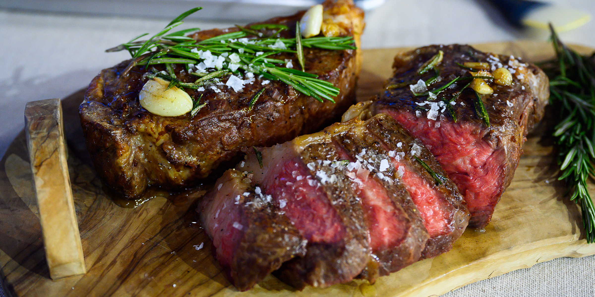

Butter Steak Recipie

- Ingredients
- 1 Ribeye 1.5 in thick
- salt and pepper
- Butter
- 4 cloves of garlic
- 2 sprigs of rosemary
- Recipie
- Salt your steak and let it rest in your fridge over night
- next day take out the steak and cut of some of the fat to use for fying the steak(you can also use your regular cooking oil)
- preheat your oven to 225 and cook in your oven until it has an internal temp of 115
- after letting your steak rest for 10 minutes pepper steak
- now fry your steak until it gets that good sear
- now add your butter, rosemary and garlic to your pan and let the butter melt and absorb those flavors
- cut your steak into 1/4 in pieces and drizzle the butter over the steak
- enjoy!!